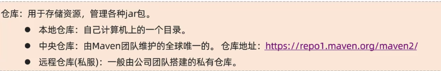
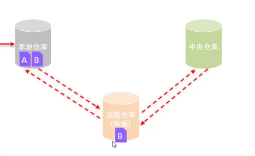
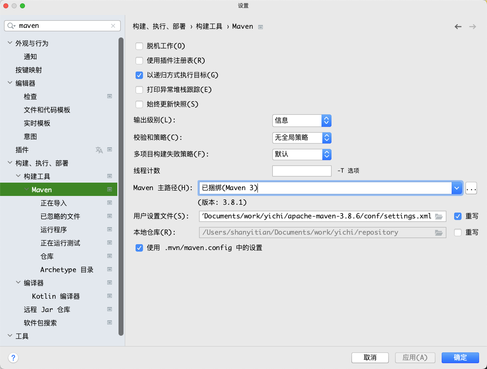
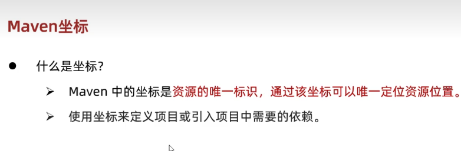
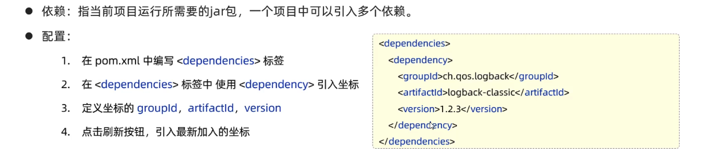

Maven¶
作用¶
- 依赖管理：快捷的管理项目依赖的资源，避免版本冲突问题。不需要下载对应版本的 jar 包。自动通过 maven 进行导入。用什么 jar 就在 pom.xml 进行更新。
- 统一项目结构：不同IDE的工程结构不一样，使用maven构建的项目是一致且通用的。


详细介绍¶
·


IDEA 集成 Maven¶
创建 maven 环境¶

创建 maven 项目¶
2022 以上 IDEA 版本，创建 Maven 是带模版的。
maven 坐标¶


导入 maven 项目¶
导入 pom.xml。
依赖管理¶
- 依赖管理
- 依赖传递
- 依赖范围
- 生命周期
依赖管理¶
想要一个依赖可以去 mvn 仓库中，可以搜索这个依赖的版本和信息，直接复制加进去就可以了。

依赖本地不存在的话，就去远程仓库搜索，然后下载这个依赖。
依赖传递¶
依赖具备传递性。
A 依赖 B，则引入 A 的时候，B 也会被随之引入。
那么如何排除依赖呢？
使用

依赖范围¶
依赖的 jar 包，默认情况下，可以在任何地方使用。
通过
- 主程序范围有效。（main 文件夹范围内）
- 测试程序范围有效。（test文件夹范围内）
- 是否参与打包运行。（package指令范围内）
生命周期¶
Maven 的生命周期就是为了对所有的 maven 项目构建过程进行抽象和统一。
Maven 中有 3 套相互独立的生命周期：
clean：清理工作；
default：核心工作，比如编译、测试、打包、安装、部署等。
site：生成报告、发布站点等。
主要关注以下五个阶段：

在同一套生命周期中，当运行后面的阶段时，前面的阶段都会运行。
install 属于 default，如果点击了 install，那么 clean 是不会运行的。所以要点击 clean，然后再点击 install。
更新: 2023-10-19 14:18:31
原文: https://www.yuque.com/xiaoshan_wgo/codingnotes/wo81zqz4m57lghbc